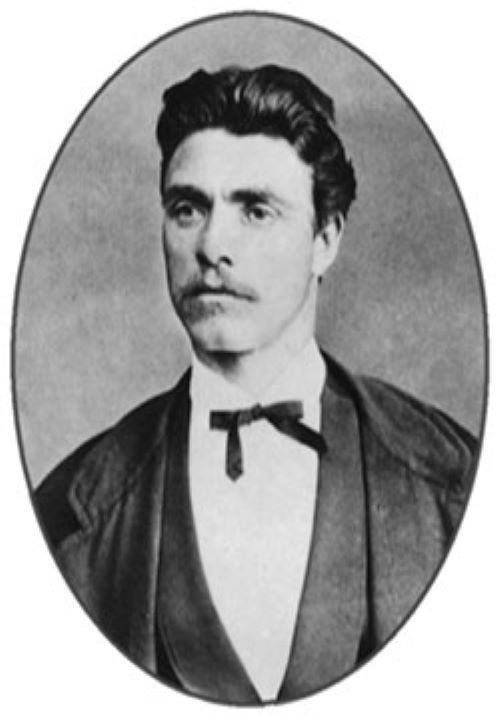

Седмият фотопортрет на Левски е бил най-популярен в миналото. На него Апостола е изобразен в бюст, в граждански дрехи-черно сако, риза, нагръдник, бяла колосана яка и черна модна за онова време вратовръзка. На този последен фотопортрет Апостола е вече на 35 години.
Снимката е направена в Букурещ към месец юни 1872г. След важното общо събрание на БРЦК. Тя е попаднала в ръцете на турската полиция, която я разпространила при издирването на Левски.
От седемте фотографии на Васил Левски , които не подлежат на съмнение, днес са известни 12 екземпляра.